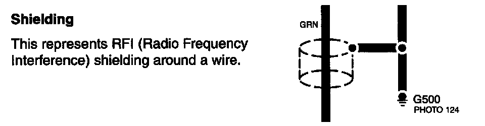

Operation CHARM
: Car repair manuals for everyone.
Home
>>
Acura
>>
2007
>>
MDX V6-3.7L
>>
Repair and Diagnosis
>>
Transmission and Drivetrain
>>
Transmission Control Systems
>>
Lamps and Indicators - Transmission and Drivetrain
>>
Lamps and Indicators - A/T
>>
Shift Indicator - A/T
>>
Diagrams
>>
Diagram Information and Instructions
>>
Symbol and Wire Color Definitions
>>
Shielding
Shielding
